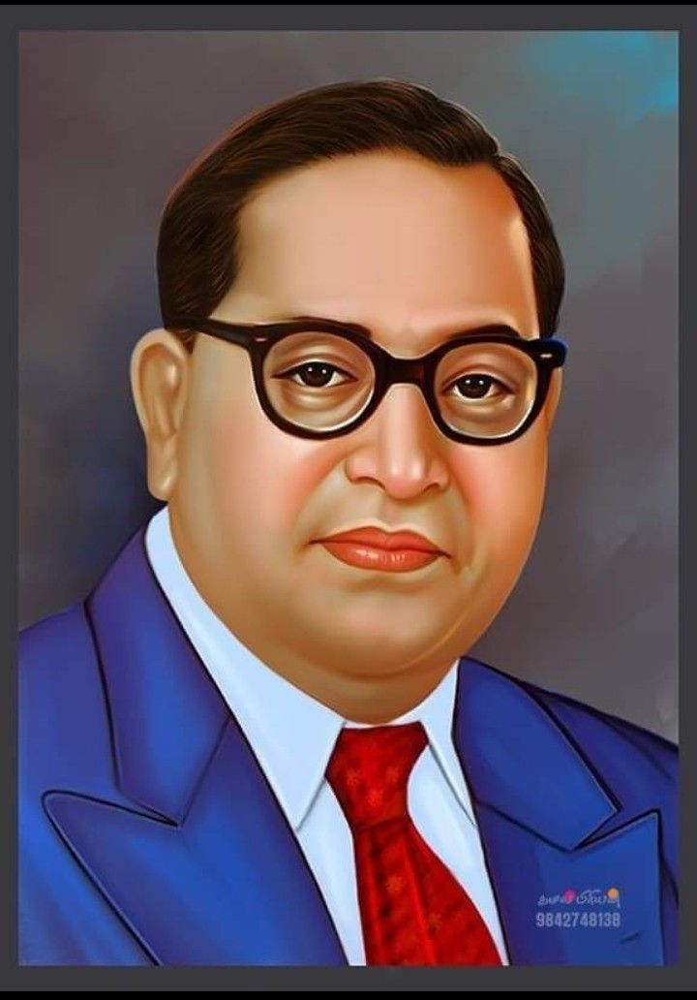

History of the Indian Constitution

History of the Indian Constitution

The Constitution of India was prepared by the Constituent Assembly, which was formed to draft a Constitution for independent India. The first meeting of the Constituent Assembly was held on 9 December 1946.
The Drafting Committee was established on 29 August 1947. It was chaired by Dr. B. R. Ambedkar, who is widely known as the Father of the Indian Constitution.
The committee carefully studied the constitutions of many countries before preparing the Constitution of India.
The history of the Indian Constitution reflects the vision of the nation's leaders to create a democratic, fair, and inclusive society. It remains the foundation of India's democracy and continues to guide the country.